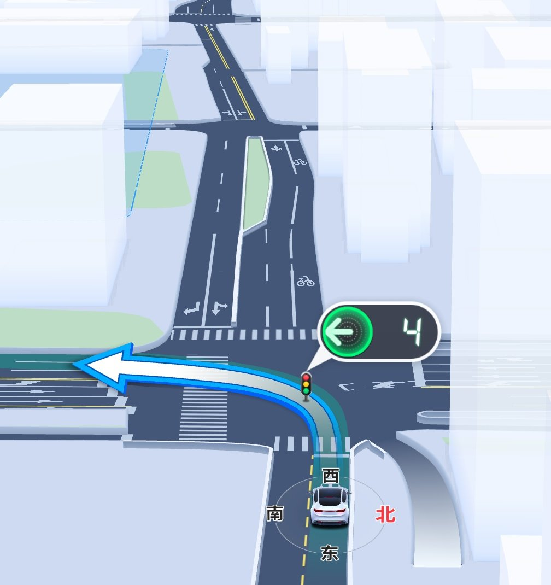

小鳥遊 ホシノ
@Xiaoyi_0324
@Lily0727K 甚至说这个提供车道级导航的软件完全免费

Lillian
@Lily0727K
中国のアプリのカーナビ、圧倒的に進化してました！
ルート選択や到着予測時間の精度が異常に高いし、現在位置と最適ルートがどちらも詳細な車線で表示されます！
この先の信号の残り秒数が見れるのも、めちゃくちゃ便利です！
近未来的な都市システムを次々と実現する技術の高さに驚かされました！ https://t.co/eo42oYwmMI